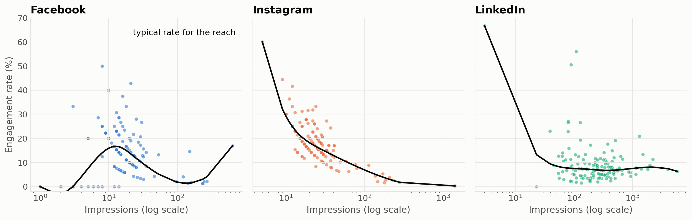
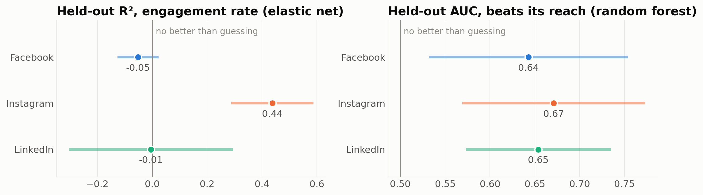
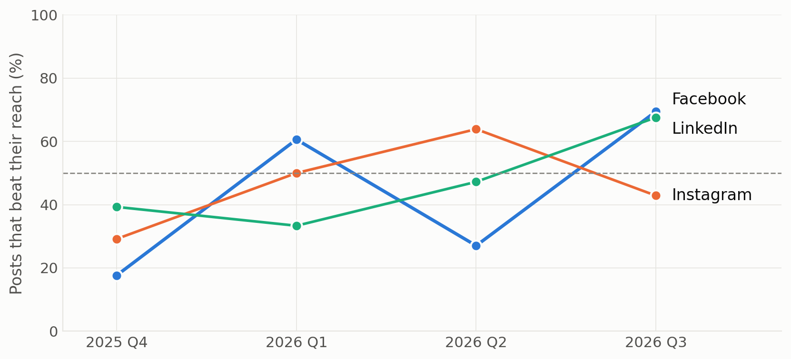
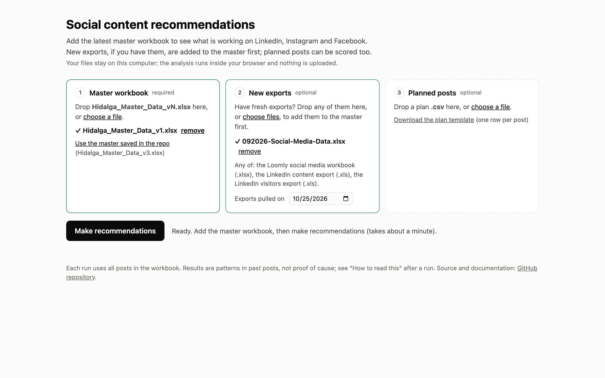

MSDS Capstone · Fall 2026 · Hidalga Technologies
Which posts work?
Data-driven content recommendations for Hidalga's LinkedIn, Instagram and Facebook, and a tool the team can rerun every month.
Grace Schmidt · November 2026
Tool: graceschmidt1.github.io/MSDS-Capstone-26
The question
Hidalga posts on three platforms. Which choices actually help a post do well?
1 · Find what works
For each platform, which choices go with higher engagement once reach is accounted for: format, content pillar, ICP segment, timing, paid boost?
2 · Hand it over
A tool the marketing team can rerun each month on new exports, with plain verdicts (“do more”, “do less”, “keep testing”) and scores for planned posts. No data science needed.
Engagement rate = (reactions + comments + shares + clicks) ÷ impressions, one formula for every platform. Results are patterns in past posts, not proof of cause.
The data
Two tools' exports, combined into one master workbook
Loomly (scheduling tool)
- Social media workbook: every Facebook, Instagram and LinkedIn post with date, time, format, labels (pillar, ICP segment) and metrics
- Monthly follower counts; click data for Loomly short links
LinkedIn (page admin exports)
- Content export: LinkedIn's own numbers per post, plus daily page metrics
- Visitors export: daily visitors and visitor demographics
Clean and choose
- ~35 files were repeated, overlapping pulls of the same accounts, so keep the most complete, latest copy of each record, not all of them
- Facebook and Instagram numbers from Loomly; LinkedIn numbers from LinkedIn's own export; pillar and segment tags from Loomly labels
- Backfill tags on older posts, one unified engagement rate
Master workbook
One row per post, plus supporting sheets
posts, Sep 2025 – Sep 2026
Facebook 124
Instagram 130
LinkedIn 137 · 100% tagged
The data
The master grows by versions, and old rows never change
Each update starts from a copy of the last master, only appends new rows, logs (never applies) changed numbers for posts it already has, then re-reads every original cell and stops if anything differs.
Partial exports are fine
Any subset of the exports works. Without the LinkedIn content export, new LinkedIn posts use Loomly's numbers and the tool says so.
Things it flags
- new posts with no pillar or ICP segment in Loomly
- a post format the tool hasn't seen
- a file it doesn't recognise
The key idea
Small posts naturally have high rates, so compare each post with its reach

Each dot is a post; the black line is the typical rate for that many impressions (a spline fitted per platform). A post's lift is how far it sits above or below the line. Every result that follows compares lift, not raw rate.
Approach
Two stages: understand the past, then make it usable
Stage 1 · Models
- Regression on engagement rate, one model per platform
- Classification: did a post beat its reach?
- OLS, ridge, lasso, elastic net, trees, random forest
Stage 1 · Checks
- Repeated cross-validation (5-fold × 10)
- 500 bootstrap refits, 5 sensitivity variants
- Corrections for many comparisons; effect sizes
Stage 2 · Tool
- Plain verdicts per choice, per platform
- What changed in the last 90 days
- Scores for planned posts
- Runs in the browser; Excel and HTML reports
Everything is in Python with versioned runs: each result records the data file's hash, the code version and the random seed, so it can be reproduced exactly.
Findings
Format is what matters, most clearly on LinkedIn

Lift compared with Image posts on the same platform, with 95% bootstrap intervals; post counts in brackets. LinkedIn Documents average +14 points (77% beat their reach) and hold in every check; LinkedIn Links trail by 3 points (11% beat their reach). Instagram Carousel and LinkedIn Multi-Image are promising.
Findings
Pillar, segment, timing and boost: no detectable difference yet
| Joint test, after correction | |||
|---|---|---|---|
| Format | 0.33 | 0.02 | <0.001 |
| Content pillar | 0.33 | 0.52 | 0.96 |
| ICP segment | 0.41 | 0.35 | 0.96 |
| Timing (weekend, time of day) | 0.83 | 0.71 | 0.96 |
| Paid boost | – | – | 0.96 |
Wald tests on whether a post beat its reach, Benjamini–Hochberg adjusted p-values. Below 0.05 = a real difference among the options.
What that means
Choose pillar and segment on strategy, not on past engagement. The differences are small enough that ~125 posts per platform can't separate them.
The tool lists each unsettled choice with roughly how many more posts would settle it (e.g. Instagram Carousel: about 15).
How sure are we?
Better than guessing, but individual posts stay hard to predict

Scores on posts the models didn't see (5-fold cross-validation × 10, mean ± 1 SD). Instagram's rate is partly predictable (R² 0.44, mostly from reach); Facebook's isn't. Whether a post beats its reach is predicted at AUC 0.64–0.67 on every platform: useful for ranking a plan, not for promising a number. The tool marks Facebook's scores as rough.
A closer look
Facebook's recent rise is a swing, not a trend

Facebook went 18% → 61% → 27% → 69% of posts beating their reach, quarter by quarter.
- Median 17 impressions per post: one or two interactions move a rate by 5–15 points
- Not format, pillar, segment, timing or follower growth (6 → 18 followers, steady)
- Not the Q2–Q3 experiment period: no effect on any platform once content is in the model
Share of posts above the dashed 50% line = more posts beat their reach than not. Quarters with at least 10 posts.
The tool
A web page: drop in the files, read the results


Left: master workbook (required), new exports and a plan of upcoming posts (both optional). Right: the LinkedIn tab, with the 90-day check, the verdicts and every choice on a chart. Results download as Excel, a one-page HTML report, or all files. Python runs inside the browser, so no file leaves the computer.
Live demo
Monthly update in four steps
- Open graceschmidt1.github.io/MSDS-Capstone-26
- Drop in the latest master, plus whichever new Loomly / LinkedIn exports you have
- Make recommendations (~40 s)
- Download the new master and keep it; read the tabs or share the HTML report
Demo: v1 + the September Loomly workbook rebuilds v2 exactly (17 new posts), with warnings for 3 untagged posts and 6 LinkedIn posts on Loomly's numbers.

Recommendations
What I'd tell the marketing team
Content
- Do more LinkedIn Documents
- Do less LinkedIn Link posts; put the link in a Document or image post
- Keep testing Instagram Carousel, LinkedIn Multi-Image
- Choose pillar and segment on strategy
- Read Facebook changes with caution
Process
- Run the tool monthly with fresh exports
- Export a new Loomly workbook each time, not last month's with posts added
- Include the LinkedIn content export, so LinkedIn posts get LinkedIn's numbers
- Tag every post with a pillar and segment in Loomly
- Score planned posts before the month starts
Limits and next steps
What this can't say yet
Limits
- 391 posts, about 125 per platform: only large effects show
- Associations in past posts, not causes
- The experiment period is the same as “Q2–Q3 2026”, so it can't be told apart from a time trend
- Post text is cut at 200 characters, so length and calls to action can't be tested
Next
- Full post text from Loomly → test length and calls to action
- Day of week, posting hour, number of segments as features
- Link Loomly click data to posts
- Planned A/B tests (e.g. Document vs Image on the same topic) to move from association to cause
How the work was run
Decisions made together, every step written down
With Hidalga
- Source rules agreed with Joshua: LinkedIn's native numbers for LinkedIn, Loomly for Facebook and Instagram, no pre-Sep-2025 backfill
- Tag fixes reviewed by hand before they went into the master
- Experiment-period posts kept in and flagged, not dropped
In the repository
- Seven pull requests, one per stage
- 232 automated tests; versioned runs with data hash and code version
FINDINGS.md: every result logged with the run that produced it- Data plan and merge log for every cleaning decision
Discussion
Questions for Hidalga
- Does the monthly workflow fit the team? Who would run it and keep the master?
- Can we get full post text out of Loomly?
- Is a planned format test (Document vs Image) possible next quarter?
- Which results would you want in front of leadership, and in what form?
Code, data pipeline and full results: github.com/GraceSchmidt1/MSDS-Capstone-26 · written report: report.html